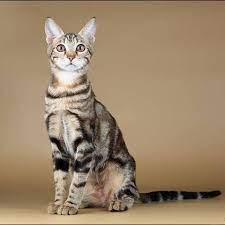

Gato Sokoke
A primeira coisa que salta à vista ao encontrar um Sokoke é o seu ar desportivo e resistente. O corpo musculoso e com ossos fortes está coberto por uma pelagem curta, destacando assim os contornos do corpo.
Características físicas do Gato Sokoke
As gatas adultas pesam entre 3.5 e 6 quilos, já o peso dos machos pode chegar aos 7 quilos.
Em relação ao corpo de tamanho médio e musculoso, a cabeça destes gatos parece ser relativamente pequena. No entanto, com orelhas de tamanho médio a grande
e os olhos claros e em forma de amêndoa, os Sokoke têm um ar atento e curioso. Outra característica destes pequenos felinos são as pronunciadas maçãs do rosto e zona dos bigodes.
Por fim, o pelo à volta do nariz e dos olhos tem uma cor mais pronunciada o que dá ainda mais destaque às feições destes gatos.
Em termos de pelagem, os Sokoke apresentam sempre um padrão tabby, ou seja, um malhado escuro sobre pelo de cor cinza ou castanho-dourado. Além disso, os gatos desta
raça raramente desenvolvem uma camada de subpelo e, por isso, a pelagem curta fica mesmo rente ao corpo
Personalidade
Os Sokoke geralmente precisam de algum tempo até se sentirem totalmente seguros junto dos donos. No entanto, a partir do momento em que confiam nos donos, estes gatos
africanos desenvolvem uma relação extremamente próxima e carinhosa com os donos.
Eles adoram passar tempo com os donos, brincar e conversar com eles. Na verdade, estes gatos são muito comunicativos. Tal como os siameses, os Sokoke emitem vários sons
ao longo do dia, e por vezes durante a noite, quer para conversar, quer para chamar à atenção dos donos. Estes simpáticos pequenos felinos também esfregam a cabeça nos donos como sinal de carinho.